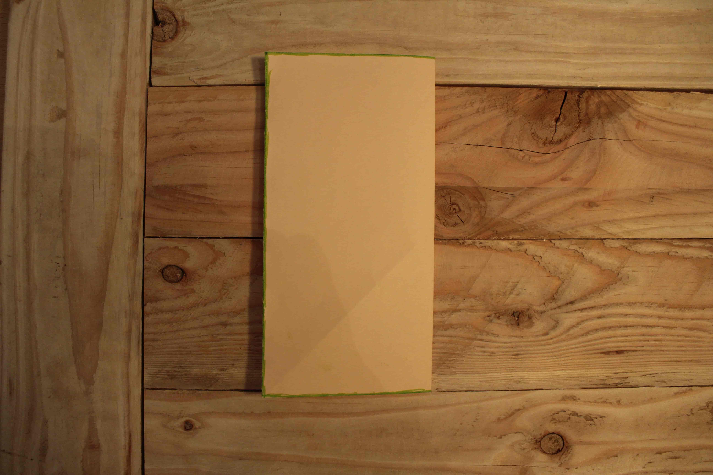

Etape n°1
-

-

- 
Plier la feuille en deux puis la déplier
Plier la feuille en deux puis la déplier


Ramener au milieu les deux côtés de la feuille parallèle à la première pliure et plier les bordure


Plier les quatres coins de la feuille jusqu’à ce que le côté touche la pliure du milieu (de façon à obtenir un losange), puis déplier.


Rabattre au niveau de l’intersection entre la pliure et le côté. Faire ça en haut et en bas. Puis déplier. ( les pliures forment normalement deux triangles).


Prendre l’un des coins au milieu d’un côté et le ramener au centre de la feuille. (Un triangle est censé apparaître ). Répétais l'étape pour chaque coin.


Retourner la feuille. La plier en deux. Puis déplier.


Retourner la feuille. Ramener les coins au centre la feuille, de manière à ce que les triangles réapparaissent de l’autre côté.
Tracer un trait entre le coin et l’extrémité de la pliure du milieu. Puis rabattre la partie obtenue par rapport au tracé. Faire pareil sur le coin d’à côté.


Rabattre le coin le plus pointue de l’autre côté de la feuille, de tel sorte qu’un triangle ressort vers le haut.


Rabattre les deux cotés de la feuilles. Le côté le plus long doit être vers le haut et le plus court vers le bas.


Prendre ces oreilles afin de relever sa tête dans la position dans laquelle on veut que sa tête soit. Applatir les bosses obtenue (bombement) à fin d'uniformiser l'épaisseur de la feuille .


Ramener la pointe arrière du lapin ( son corps étant le carré centrale ) afin qu'il ressorte en dessous de sa tête ( ce sont ses pieds ) et le déplier.


Ensuite, il faudra que ses pieds ressortent mais cette fois ci de l’intérieur. Pour cela le pli précédent va guider ce nouveau pliage. Il faut ouvrir le lapin, puis rabattre la pointe vers l’intérieur de façon à ce que le bout ressortes sous sa tête


Prendre la pointe de la tête du lapin (ce sera son nez). Plier le bout du triangle et le déplier. Puis ouvrir son nez pour ensuite le rabattre vers l'intérieur.


Pour son postérieur on va rabattre le bout pointu du bas à l’intérieur afin qu’il est un aspect plus arrondi et moins pointu.

Enfin, ouvrir ses oreilles afin qu’elles ne soient plus plates.